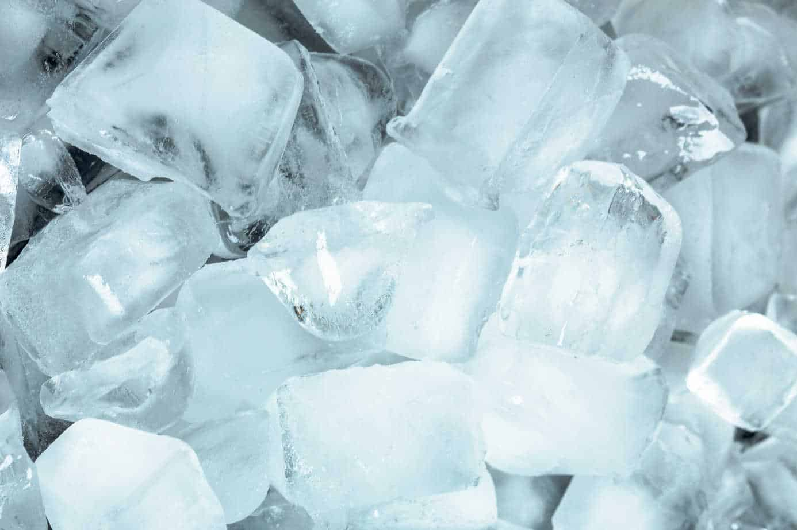

Ice Cubes Recipe

Description
Ice cubes are probably the most deceptively difficult culinary
creation to get right. Luckily, you're in the right place, because
I've unlocked the ALL secrets in this simple to follow recipe.
Ingredients
- 2 cupes of water (approximately)
- 2 tbsp of water (additional if needed)
Steps
- Open the freezer door.
- Get your ice cube tray out of the freezer and dump out
any ice cubes left in it.
- Hold the tray under your faucet and fill it with cold water.
Don't worry if any water spills. You can just dump it on the
floor and start over.
- Place the filled ice tray back in the freezer.
- Close the freezer door.
- Bring a chair into the kitchen so you can sit by the freezer
while you're waiting for the ice to freeze. It'll take
about 4 to 6 hours.
- Open the freezer door.
- Make sure the ice cubes are frozen, and they're ready to
use!